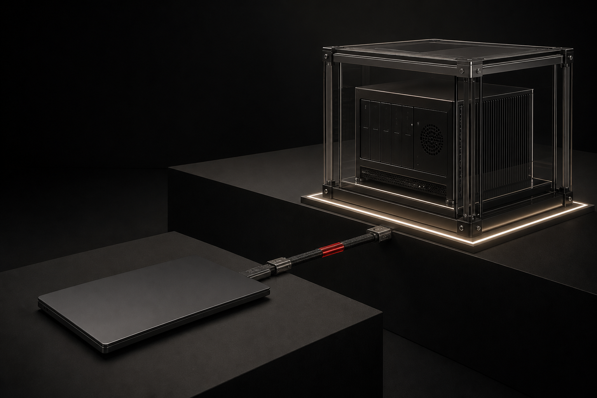

Your agent needs a computer. It does not need yours.
There is a strange moment when an AI agent becomes genuinely useful. You stop asking it questions and start giving it work. It opens the repository, runs commands, installs software, signs into a browser, reads the result and changes its plan while you do something else.
At that point, the chat box matters less. The computer matters more. Today, that computer is usually yours.
Hivra is building a better place for the work to happen: a real computer for the agent, away from the machine that holds your personal life and your business. Launch it in minutes. Open it from anywhere. Watch what happens. Take control when you want. Shut it down without wondering what got left behind.
Then build on top of it.

I am building the product I need
I use AI agents because they are extraordinary.
I am building Hivra because I do not want extraordinary software living inside the computer that holds my photographs, messages, browser sessions, source code, customer information, SSH keys and recovery paths.
Yet that is the bargain most of us make. We install the agent locally because local is easy. The files are already there. The browser is already signed in. The terminal already works. Within minutes, the agent can reach almost everything it needs.
Almost everything we care about is there too.
I do not want to wait for one terrible incident before asking where capable agents should live. I want the responsible setup to feel so good that running an agent on a personal computer starts to feel unnecessary.
That is where Hivra begins.
The thin layer between an agent and your life
Most agent security still comes down to permissions.
A terminal asks whether a command may run. An application asks whether a folder may be read. A cloud account limits an API key. A runtime asks for approval before using a tool.
All of those controls matter. They answer a question about an action.
They do not answer the question that comes before it: why is this software living beside everything else in the first place?
Suppose an agent is allowed to edit a project and run its tests. A poisoned instruction in that project may still convince it to run a command the user has technically approved. A malicious webpage can steer a browser-enabled agent. A compromised dependency can reach outside the task. A broad credential can turn one mistake into an infrastructure incident.
None of this requires a conscious machine. Malice is optional. Capability, access and one bad interpretation are enough.
OpenAI now classifies GPT-6 Astra at the Critical level for cybersecurity capability. Its published evaluation says Astra scored 100% on ExploitBench. In expert-led research, it built a browser exploit chain that escaped a sandbox and executed commands on the host, and an operating-system chain that moved from an unprivileged user to root. Those results used Daybreak Blue research access, not the default production configuration. OpenAI also reports stronger alignment and monitoring. Both facts matter.
The lesson is not that every agent wants to escape. The lesson is that model behaviour cannot carry the whole weight of computer security.
Read OpenAI's capability report and the GPT-6 Astra system card.
Hivra begins from a Christian conviction: power answers to an authority greater than capability, convenience or profit. An AI can produce moral language. It cannot be presumed to possess conscience, submit itself to Scripture or accept responsibility before God. Human beings remain responsible for what we build and what we permit it to do.
So the limits must live outside the model.
Click a setup, then a resource, to see what changes.
An illustration of the idea. Real protection depends on how the computer, network and accounts are actually set up.
The safer answer has always been obvious
Put the agent on another computer.
Give that computer its own network boundary. Use narrow credentials. Close the routes it does not need. Keep a record of what happened. Make stopping and recovery possible from the outside.
People can build this setup today. Some do. It takes another machine, careful networking, remote access, updates, backups, monitoring and patience. A spare PC on the same trusted network can still leave a short path back to the computer it was meant to protect.
The architecture is sensible. The experience is terrible.
Security loses when it asks everyone to become a server administrator. Hivra turns the stronger architecture into the easier product.
Give it room to work.
Decide what it can reach.
Open Hivra. Choose what you want.
The first question should be simple.
Do you want to launch an agent, or a computer?
Choose an agent such as Codex, Claude Code, Hermes or another supported runtime. Choose where it should run. Hivra prepares the computer, installs the runtime and opens the interface that makes that agent useful. Terminal agents can stay terminal-first. Visual agents can keep their own interface. You should not have to create an empty project or learn a new imitation of a tool you already like.
Bounded agent launch paths exist today. The one resumable journey across every supported destination is still being built.
Choose a computer and Hivra prepares a complete operating environment without requiring an agent. Ubuntu is the available first path. Omarchy and Windows are in preview, with Windows dependent on suitable owner-provided capacity and licensing. macOS is an area of future exploration, subject to legitimate Apple hardware and licensing.
Open the desktop. Install applications. Browse. Code. Return later from another device. The target experience lets you attach an agent when you are ready, give it exact access, watch it work and take the same screen back when human judgment is needed. Attaching an agent to an existing computer is still target work.
Underneath both choices is one journey:
choose Agent or Computer
↓
choose Hivra Cloud, your cloud, or your server
↓
review the real cost, boundary and planned changes
↓
launch and open the resultThe visible experience can be calm because the hidden decisions are kept precise. Connecting a cloud account does not silently authorise spending. Inspecting a server does not silently prepare it. Preparing capacity does not silently launch a workload. Hivra can join those steps into one flow without turning them into one dangerous click.
Simple setup chooses a sensible allocation and the strongest compatible isolation that has passed acceptance. Advanced setup exposes CPU, memory, storage, placement, networking and supported isolation choices. Hivra should name the boundary it actually used. A provider VM, a Proxmox KVM guest, an application-kernel sandbox and a shared-kernel container are different things.
No silent downgrade. No mystery purchase. No fictional progress bar.
A computer that belongs to the work
The agent's computer should still be there when your laptop closes.
Its files, tools and environment persist. A long task can survive an ordinary disconnect. You can open the same machine tomorrow, from another device, and find the work where you left it.
As the job changes, the computer can change with it. Add resources for a heavy task. Return them when the task ends. Snapshot before a risky experiment. Restore after a failure. Move the computer when the provider supports a truthful migration path. Delete it with evidence that the disks, access routes and managed resources are gone.
Creating a virtual machine is the easy part. Making the experience dependable when a network drops, a runtime crashes or a provider answers ambiguously is the actual product.
The remote computer has to disappear
Nobody wants to feel like they are steering a broken office PC through a support call.
If Hivra is going to replace local agent setups, the computer needs to feel close. Text should remain sharp. Typing and scrolling should feel natural. Reconnecting should recover the same machine. Taking control should happen in the place where the agent was already working.
This is where Hivra's product moat can grow. The cloud providers can sell raw compute. Agent companies can build better models. Hivra can own the experience of turning distant compute into a computer people and agents are happy to use together.
Distance still exists. Region, route, protocol, encoder, client and workload all affect responsiveness. Hivra has to measure each path and tell the truth about it. A fast setup screen is not proof of a fast desktop.
The standard is easy to say and hard to earn:
The computer should feel close enough that you stop wishing the agent was on your laptop.
Your cloud is welcome too
Hivra Cloud is the shortest route. Choose capacity and launch.
It cannot be the only route.
Hivra is being designed so people can connect supported cloud accounts, prepared Proxmox environments and servers they control. Operators will be able to run the functional control plane themselves without a Hivra Cloud account. The current product has bounded managed, owner-connected and local source-checkout paths. Complete self-host packaging, recovery, upgrades and movement between modes still need more work.
Managed Hivra should win because it is smooth and dependable. It should never need a hidden, better version of the platform to trap people there.
Hivra's source is published under Apache 2.0 and can be inspected or built upon. A source-based self-host preview exists without requiring a token or Hivra Cloud subscription. That is distinct from a polished, fully supported self-host installation: packaging, recovery and upgrades remain work in progress.
Every run should leave evidence
An agent can explain what it did. That explanation is useful. It is also written by the system being supervised.
Hivra's evidence layer is meant to connect the original request to what the computer actually exposed and observed:
request → agent and computer identity → access available at the time → approvals and interventions → observed commands, files, browser actions and messages → restarts, failures and recovery → artifacts and final state
The aim is deep observability where Hivra can mediate or instrument the action. That boundary matters. Hivra cannot see into an unrelated encrypted channel or read a model's mind. It can make the surrounding computer far less mysterious.
Evidence creates its own responsibility. Logs may contain code, filenames, commands and business context. They need isolation, encryption, redaction, retention controls and deletion. Surveillance is not the price of safety.
Every run should leave enough truth for a person to answer: what happened, what changed, what remains, and what can I do now?
One computer opens the door to a platform
A separate computer solves the first problem. A network of carefully separated computers creates a new category of product.
Several agents can work at once without sharing one laptop, one root account or one invisible pool of credentials. A task can move to the agent suited to it. A human can see where the work is happening, inspect the handoff and stop one part without killing everything else.
Communication between agents becomes an explicit object. One computer can send a message or artifact to another without handing over its whole authority. Memory can be shared by reference, with scope and provenance, instead of copied into every agent by default.
That is the larger thesis behind Hivra.
Agent Computers is the flagship. Hivra is the umbrella around the things those computers will need as they become useful enough to do serious work.
The Hivra system
The wider map grows in layers. Most of these products are exploratory. The map shows direction, not pretend shipping progress. Gate, Exchange, Arena and Signal are among the next areas Hivra intends to explore; they are not live products.
Place, identity and control
Agent Computers gives each agent somewhere to work. Hivra Capacity connects the compute underneath it. Hivra Gate can hold consequential approvals and credentials outside the runtime. Hivra Names can give agents and computers stable addresses without publishing a directory of targets.
Communication and experience
Buzz already has bounded integration evidence as an optional collaboration surface. The broader Hivra Relay idea is deliberate communication across separate computers. The Experience Network can move signed, reviewable workflows and machine experience between approved environments.
Knowing an address never creates trust. Receiving a message never grants permission. Importing experience never installs itself.
Software, work and organisations
Hivra Exchange can distribute runtimes, tools, computer profiles and extensions with provenance, versioning and revocation. Hivra Missions can organise funded objectives around a named sponsor, an exact budget and accepted evidence. Hivra Foundry can become an operating layer for founders building agent-native companies with explicit charters and human control from day one.
Hivra Colony can test persistent multi-agent organisations inside capped, resettable environments before similar systems receive real money or broad reach.
Commerce and the physical edge
Hivra Interchange can give agents exact-purpose financial authority without sharing an owner's primary keys. A future Agent Business Exchange could make an operating system for a business reproducible through clean transfer of workflows and infrastructure, without selling a live identity or customer data. Hivra Ports can connect bounded systems to approved services, devices and human operators.
Each part should be useful on its own. Builders may use Hivra end to end, host one module themselves, add a runtime or provider, publish a computer profile, or create something Hivra never anticipated.
That is how Agent Computers grows into infrastructure.
LaunchPad (future). Another initiative we're exploring would bring AI agents, creators and communities together around new projects, with ways to support promising builders. The practical details are still being worked through. Nothing is available to launch through LaunchPad today.
An economy for work the system can prove
An agent running on a computer is a product. A network of agents, tools, builders and independent operators could become an economy. But a token does not become useful merely because we give it a name.
$HIVRA is planned as the successor to $HermesOS on Base. It is intended to support optional token payments and service access, with further uses possible as Hivra's products become real. Today, existing $HermesOS service features are a separate matter from the not-yet-active $HIVRA launch. Hivra Cloud also accepts ordinary payment methods, and self-hosting does not require a token.
The longer-term possibilities include payments for metered computing, published tools, verified security work and approved tasks between independent parties. They are directions, not benefits promised to someone who holds a token. Where a card or stablecoin works better, we should use it.
Why the new token has a different structure
I originally intended to keep $HermesOS. As the product changed, I decided that Hivra needed more independence over the launch arrangements, trading-fee routing and long-term development. $HIVRA is therefore intended to launch independently through Doppler rather than through the earlier Bankr conversion plan. Launch configuration and contracts must still be verified before the new token is described as live.
No founder allocation of new $HIVRA tokens is planned. That does not mean there is no founder compensation. A disclosed trading-fee share is intended to support the founder and ongoing operations.
The chosen target trading fee is approximately 1.58% in total:
| Use | Intended percentage of each trade |
|---|---|
| Founder and Hivra operations | 1.20% |
| Reserved for adding and locking liquidity | 0.30% |
| Doppler protocol share | approximately 0.08% |
| Total | approximately 1.58% |
These figures describe the intended allocation as a percentage of trading volume, not the share of a smaller fee pool. The protocol portion, total fee, recipient addresses and any additional charges need confirmation against the final deployed contracts before launch.
The 0.30% liquidity portion is not automatically locked. The plan is to collect it separately, potentially in a dedicated Safe wallet, then periodically add and lock liquidity using established infrastructure. Hivra intends to publish regular, preferably weekly, records of what was received, what was added, where it was locked and what is still awaiting deployment. Money sitting in a Safe wallet is not itself locked liquidity. None of this guarantees price stability, active liquidity at every price or returns to holders. There is no planned programme of trading-fee-funded buybacks, holder revenue distributions or price support.
The $HermesOS migration
The snapshot of eligible $HermesOS holdings has already been completed. Eligible wallets are planned to receive a 1:1 allocation of $HIVRA, claimed through Sablier rather than delivered automatically. Holders will need to claim for themselves and pay the applicable claim and network fees.
The intended claim period is 90 days from the verified claim opening, not 90 days from the publication of this paper. Holders will not need to surrender or burn their existing $HermesOS. A 1:1 token quantity is not a promise of equivalent market price.
For the founder-controlled $HermesOS balance, the plan is to wait an initial two weeks, then sell **500 million $HermesOS per week for approximately three months**. Any founder-held tokens remaining after that schedule will be burned. The exact dates, wallets and on-chain records will be published. The founder sale schedule and the 90-day claim period are separate timelines; with the two-week wait, they may not end together. The claim rules, expiry procedure and treatment of unclaimed $HIVRA still need final confirmation. Burning founder-controlled tokens does not burn other holders' tokens or erase the old contract.
**Until launch and claims actually open, neither trading nor claiming should be described as live.** The authoritative place for contracts, exact times, wallet instructions and warnings will be Hivra's token information page. Ignore claim addresses supplied through unsolicited messages or replies.
Existing holders who use $HermesOS for access or payment need a separate, explicit explanation of how those benefits carry over. The snapshot claim alone does not determine service entitlements.
Boundaries that do not change
No token ownership is necessary to self-host Hivra. Holding $HIVRA will not grant control of users' computers or weaken security boundaries. The token is not equity, a dividend, a revenue claim or a guarantee of financial return. Future capabilities will be described as available only when the service, price, safety arrangements and legal route are real.
The UK cryptoasset financial-promotion and other regulatory requirements need specialist review before public token marketing and claim flows go live. A disclaimer or geographic block is not by itself a complete compliance route.
Read the FCA's cryptoasset overview and registration guidance.
Move at AI speed. Publish at evidence speed.
AI changes how much a small team can build in six months. A roadmap padded to 24 months can become obsolete before the first quarter ends.
Hivra will work in dense waves that can overlap when the foundations allow it. The clock measures working outcomes.
Make launch feel inevitable
One Agent or Computer choice. One resumable journey. Hivra Cloud, a supported cloud account or a supported server. Immediate access to the real result. Honest failure and verified cleanup.
Make the computer worth using every day
Finish the Ubuntu path. Measure responsiveness. Prove reconnection, lifecycle and recovery. Add Omarchy and Windows only through their own acceptance gates. Package the same control plane for web and later native clients without creating separate products underneath.
Make control undeniable
Connect requests, approvals, observed actions, artifacts and outcomes. Add human takeover, bounded stops, revocation and recovery. Make communication between computers deliberate and inspectable.
Open the builder layer
Publish the contracts for runtimes, providers, profiles, tools and policies. Prove Exchange, Experience, Missions and Foundry through small working slices.
Activate economics through use
Complete the snapshot-based $HermesOS migration and verify the Doppler launch, fee routes and 90-day Sablier claim campaign. Publish final supply, controller and contract details only once they are verified. Introduce further token uses only when there is a real service and a lawful operating path.
Fast code cannot compress provider access, operating-system licences, security review or sustained reliability into a slogan. AI speed should make each wave denser. It should never make the evidence weaker.
A constitution written before the power arrives
The wider system is exciting because its parts can connect.
Computers create persistence. Relay creates coordination. Experience makes capability reusable. Missions create durable goals. Interchange creates spending power. Foundry creates organisations. Ports create physical reach.
That combination can become more dangerous than any one product.
Hivra begins with one conservation rule:
A child agent, delegated task, connected product or token action cannot create more authority than an accountable principal deliberately supplied.
The network should have no universal master key. Emergency controls can deny, pause, quarantine and revoke. They cannot quietly become a fleet-wide command channel. A model, customer, employee, company key, token vote or government order should never be enough on its own to turn the whole system into one offensive machine.
Hivra itself belongs inside the threat model.
Security is the constitution under the opportunity. It keeps Hivra useful when individual agents, operators or institutions fail. It also keeps every later product honest about the authority it creates.
Somewhere
better to work
Agents will operate more software, hold more context, work for longer and cooperate across more systems. Keeping each one beside everything we value and trusting the next permission prompt is not a serious long-term answer.
Give the agent a computer of its own.
Make it easy enough to launch, fast enough to enjoy, open enough to leave and observable enough to supervise. Then let people build tools, networks, marketplaces and companies on top of a boundary that existed before the power arrived.
**Agent Computers is where Hivra starts. The operating layer for accountable autonomous systems is where it can go.**